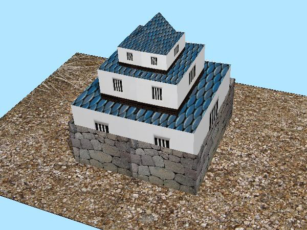
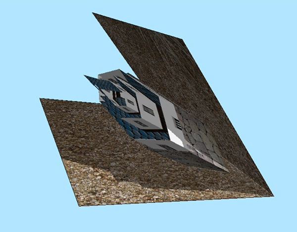
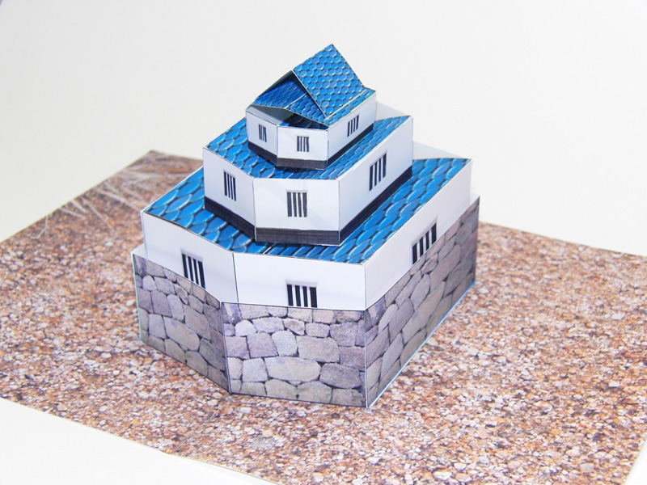

An Interactive Design System for Pop-Up Cards with a Physical Simulation
物理シミュレーションを用いたポップアップカード設計支援システム
Computer Graphics Inernational 2011
Satoshi Iizuka, Yuki Endo, Yoshihiro Kanamori, Jun Mitani, Yukio Fukui
University of Tsukuba
  Abstract
We present an interactive system that allows users to design original pop-up cards. A pop-up card is an interesting form of papercraft consisting of folded paper that forms a three-dimensional structure when opened. However, it is very difficult for the average person to design pop-up cards from scratch because it is necessary to understand the mechanism and determine the positions of objects so that pop-up parts do not collide with each other or protrude from the card. In the proposed system, the user interactively sets and edits primitives that are predefined in the system. The system simulates folding and opening of the pop-up card using a mass-spring model that can simply simulate the physical movement of the card. This simulation detects collisions and protrusions and illustrates the movement of the pop-up card. The results of the present study reveal that the user can design a wide range of pop-up cards using the proposed system.
オリジナルポップアップカードを設計できる対話的なシステムを提案する。ポップアップカードとは、折り畳まれたカードを開いたときに立体が立ち上がるものであり、そのおもしろさから多くの人に親しまれている。しかしながらその構造上の幾何的制約の複雑さのために、一般ユーザがポップアップカードを一から設計することは難しい。本システムでは、ユーザはあらかじめ用意されている複数の基本部品を台紙に設置・編集しながら目的のポップアップカードを作成する。この編集作業の際、各部品はシステムによって折りたためるという制約を満たすことが保証されるため、ユーザは幾何的な制約条件を意識することなく形のデザインに専念できる。さらに本システムでは、バネマスモデルとヒンジバネモデルを組み合わせた物理シミュレーションによって、カードの開閉の様子をシステム上で再現することができ、同時に部品の衝突やはみだしが無いか検出することができる。本システムによって、既存手法よりも様々な種類のポップアップカードの設計が可能となることを示す。
Video
Publication
- Satoshi Iizuka, Yuki Endo, Jun Mitani, Yoshihiro Kanamori, Yukio Fukui: "An Interactive Design System for Pop-Up Cards with a Physical Simulation", The Visual Computer (Proc. of Computer Graphics International 2011), 27, 6, 605-612, 2011. [PDF (0.9MB)]
- 飯塚里志，遠藤結城，三谷純，金森由博，福井幸男： "物理シミュレーションを用いたポップアップカード設計支援システム"，Visual Computing/グラフィクスとCAD合同シンポジウム2011, 2011-6．[PDF (6.3MB)]
- 飯塚里志，遠藤結城： "バネマスモデルを用いたポップアップカード設計支援ツールの開発"， ソリューション型研究開発プロジェクト2010年度研究成果報告（CS Technical Reports Special Issue on "Program for Develpment of ICT Solution Architects"）, 61-68, 2011.
Software
Download "PopupCard_ver1.0.1" for Windows (1.8MB)Press
- 日刊工業新聞 第19面 "開くと飛び出すカード ‐ 初心者でも簡単作成", 2011/5/26. Web版の記事